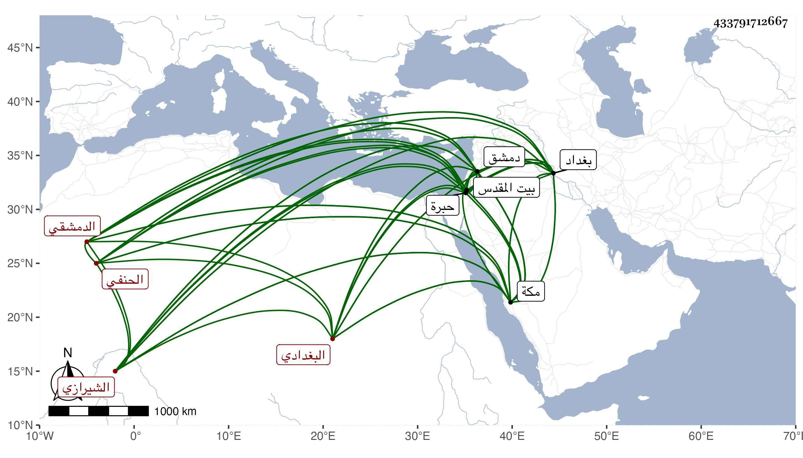

0902Sakhawi.DawLamic.ITO20230111-ara1.EIS1600.433791712667
Biography ID: 433791712667
883
أسد بن محمد بن محمود الجلال الشيرازي البغدادي ثم الدمشقي الحنفي . ذكره شيخنا في أنبائه وقال أنه قدم بغداد في صغره فاشتغل على الشمس السمرقندي في القراءات والقرآن والفقه ثم حضر مجلس الكرمائي وقرأ عليه البخاري كثيرا وجاور معه بمكة وكان يقرئ ولديه وغيرهما في النحو والصرف وغير ذلك مع سلامة باطن ودين وتعفف وتواضع وخط حسن وقدم دمشق وولي أمامة الخانقاه السميساطية بها ودرس وأعاد وحدث وأفاد مات بها في جمادى الآخرة سنة ثلاث وقد جاز الثمانين انتهى ملخصا ، وذكره التقي الكرماني أحد من أشير إليه أنه قرأ عليه وقال قرأت عليه القرآن والشاطبية وغيرهما وكان فاضلا في القراءات والنحو والصرف واللغة وفقه مذهبه مشاركا في غيرها مع حسن الصوت بالقرآن والحديث وهو كان القارئ للبخاري بمجلس والدي مدة طويلة بل لازم مجلس والدي نحو ثلاثين سنة وجاور معه بمكة ولزمه حتى مات ، ولما قدم علينا الشيخ نور الدين الزرندي الحنفي سمعنا عليه بقراءته وارتحل بسبب الفتنة اللنكية في سنة خمس وتسعين عن بغداد إلى دمشق فأقام بها بعد زيارته القدس والخليل حتى مات عن نيف وستين أو سبعين ودفن بظاهر دمشق رحمه الله .
